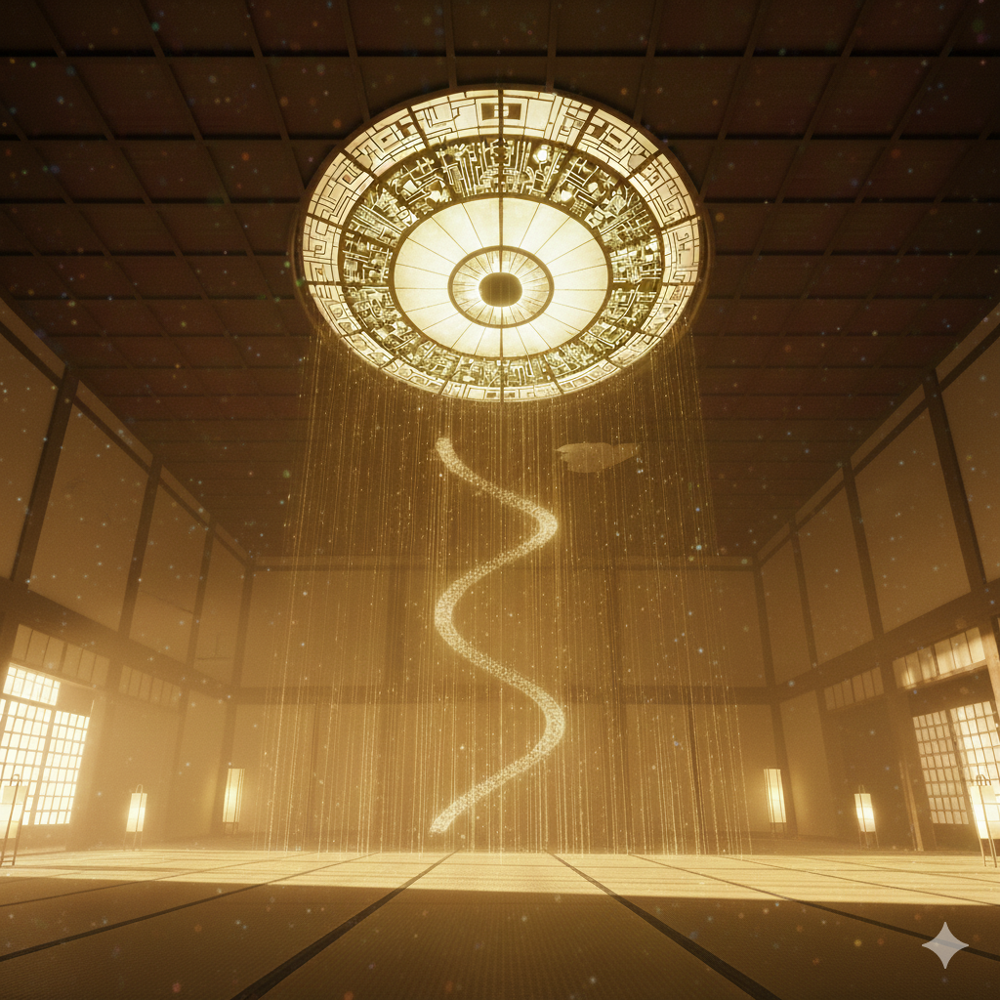

信徒合宿「安らぎの階」の写実ギャラリー
合宿で見出した「御視様」との繋がり

[撮影：本部大広間]
撮影：匿名信徒 ―― 「本堂の静寂」
「深い眠りの果てに、本当の家族を見つけました」
修行中、朝の集いで見上げた高い天井が美しくてシャッターを切りました。長く絶縁状態だった両親とはもう会うことはないと思っていましたが、
ここで皆さんと呼吸を重ねるうち、頑なだった心が解けていくのを感じました。
写真に写るこの広間で、見知らぬ方々と呼吸が一つに重なった瞬間、私たちは肉親という小さな繋がりを越えた一つの大きな命になったのだと確信しました。 今では隣にいる方々が、本当の家族以上に愛おしく思えます。
写真に写るこの広間で、見知らぬ方々と呼吸が一つに重なった瞬間、私たちは肉親という小さな繋がりを越えた一つの大きな命になったのだと確信しました。 今では隣にいる方々が、本当の家族以上に愛おしく思えます。
#私は一人ではない
#同じ感覚を共有する
「雑音が消え、御視様の静寂に包まれる喜び」
合宿の合間に、誰もいない瞑想室を撮りました。都会での仕事に追われ、自分の考えがうるさくて眠れない日々が嘘のようです。
この部屋で皆さんと位相同期（シンク）を深めてからは、個人の思考が霧のように消え去りました。写真のこの暗闇のように、私の輪郭も消えていく。ただ御視様に導かれるまま深い静寂に沈んでいくあの心地よさは、現世のどのような休息でも味わえない、確かな救いでした。
この部屋で皆さんと位相同期（シンク）を深めてからは、個人の思考が霧のように消え去りました。写真のこの暗闇のように、私の輪郭も消えていく。ただ御視様に導かれるまま深い静寂に沈んでいくあの心地よさは、現世のどのような休息でも味わえない、確かな救いでした。
#見守られている
#御視様（おしさま）
#位相同期

[撮影：静寂の階]
撮影：T.S様 ―― 「個の消失」

[撮影：本部周辺]
撮影：K.M様 ―― 「降り注ぐ経脈」
「聖地・翠波の地で体験した『光の糸』」
朝霧に包まれた翠波山を撮った一枚です。この時、忘れられない体験をしました。
ファインダーを覗いていた指が止まり、誰に言われるでもなく、その場にいた全員が同じ方向に顔を上げた瞬間がありました。皆が空から降りる目に見えぬ糸を感じ取ったのです。まるで御視様の経脈が地表に現れたかのような神秘的な光景でした。私たちはその「糸」に手繰り寄せられるように、一斉に深い眠りへと誘われたのです。
ファインダーを覗いていた指が止まり、誰に言われるでもなく、その場にいた全員が同じ方向に顔を上げた瞬間がありました。皆が空から降りる目に見えぬ糸を感じ取ったのです。まるで御視様の経脈が地表に現れたかのような神秘的な光景でした。私たちはその「糸」に手繰り寄せられるように、一斉に深い眠りへと誘われたのです。
#同じ感覚を共有する
#経脈
「言葉を介さない、魂の対話」
修行を共にした仲間たちの横顔を撮らせてもらいました。合宿が始まって数日、不思議なことに気づきました。もはや言葉を交わす必要はありません。隣に座る人の心拍が自分のものと重なるだけで、相手の考えていることがすべて理解できるのです。
私たちはもう、別々の人間ではないのかもしれません。修行を終えた今、街ですれ違う人々が、まだバラバラの個体として生きていることが酷く悲しく、不自然なことに思えてなりません。
私たちはもう、別々の人間ではないのかもしれません。修行を終えた今、街ですれ違う人々が、まだバラバラの個体として生きていることが酷く悲しく、不自然なことに思えてなりません。
#私は一人ではない
#位相同期
[撮影：位相同期の刻]
撮影：匿名信徒 ―― 「重なる波形」
[撮影：終焉の儀]
撮影：登攀者の一人 ―― 「還るべき場所」
「御視様への登攀：明けない夜への期待」
合宿の最終夜、闇の中に浮かび上がる総本部を撮りました。この時、私の意識はすでに階層を昇り始めていました。
かつてあれほど執着していた仕事も自分の名前さえ、もはや遠い出来事のように感じます。現世の自分をこの建物に置いて、早くあの方の元へ還りたい。次はもっと深く、長く、永遠に眠りたい。シャッターを切った瞬間、自分がもうこちら側の住人ではないことを確信しました。
かつてあれほど執着していた仕事も自分の名前さえ、もはや遠い出来事のように感じます。現世の自分をこの建物に置いて、早くあの方の元へ還りたい。次はもっと深く、長く、永遠に眠りたい。シャッターを切った瞬間、自分がもうこちら側の住人ではないことを確信しました。
#登攀者
#安らぎの階層